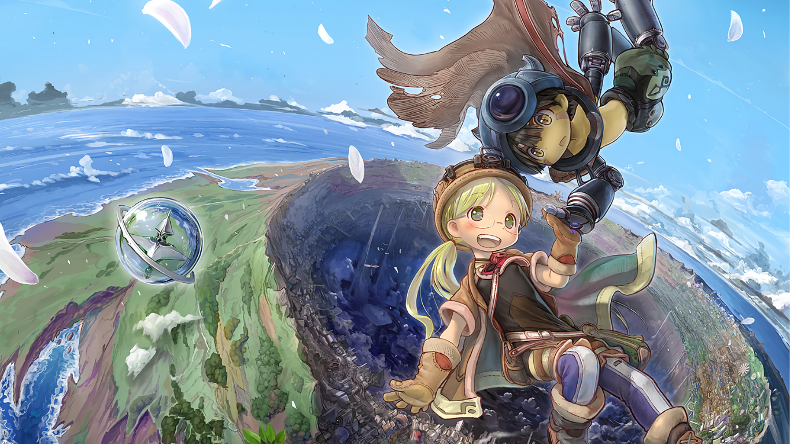

MADE IN ABYSS
9 / 10
The Abyss, a vast and perilous chasm teeming with strange creatures and ancient relics, has captivated explorers known as Divers, who risk their lives to uncover its secrets and confront the unknown. Among these adventurers are the legendary White Whistles, revered as heroes. Riko, daughter of the missing White Whistle Lyza, dreams of following in her mother's footsteps and exploring the Abyss's deepest reaches, but as a novice Red Whistle, she is limited to the shallowest layer.
Studio : Kinema Citrus
Type : TV Series
Release date : July 7, 2017